Wising up to CatWISE
Using simulation-based inference to measure the cosmic dipole
Oliver Oayda
PhD Candidate
Sydney Institute for Astronomy
The University of Sydney
July 7, 2026
Simulation-based inference resolves systematics.
The Kinematic Dipole
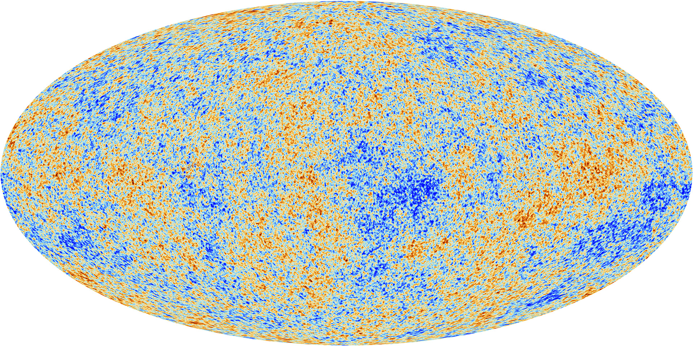
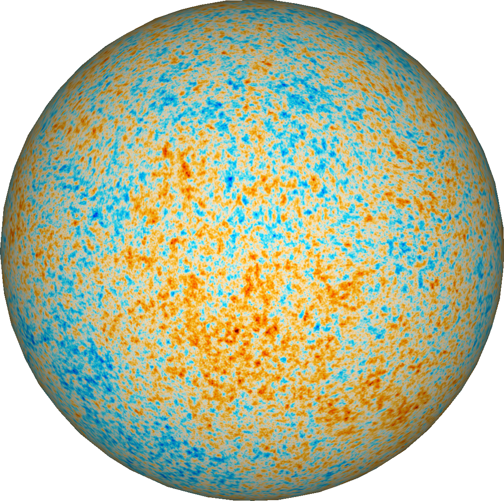
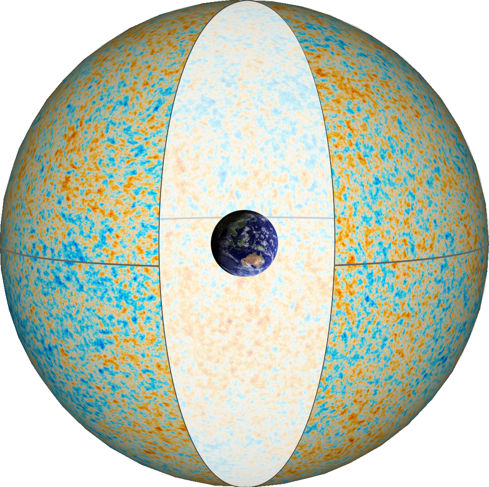
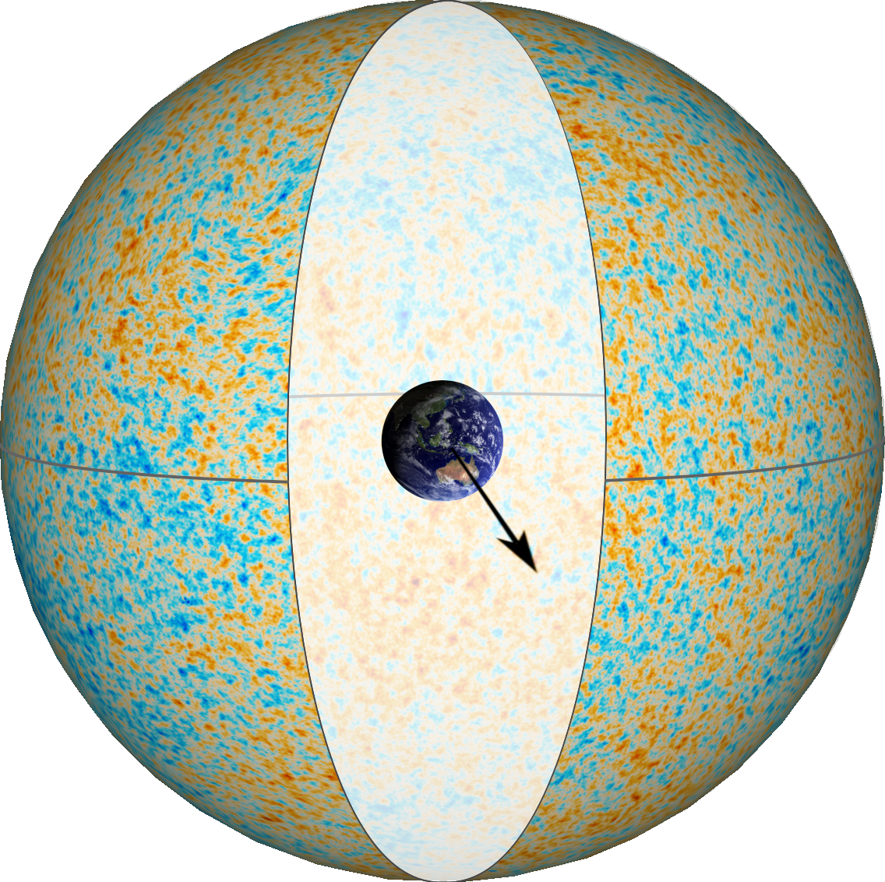
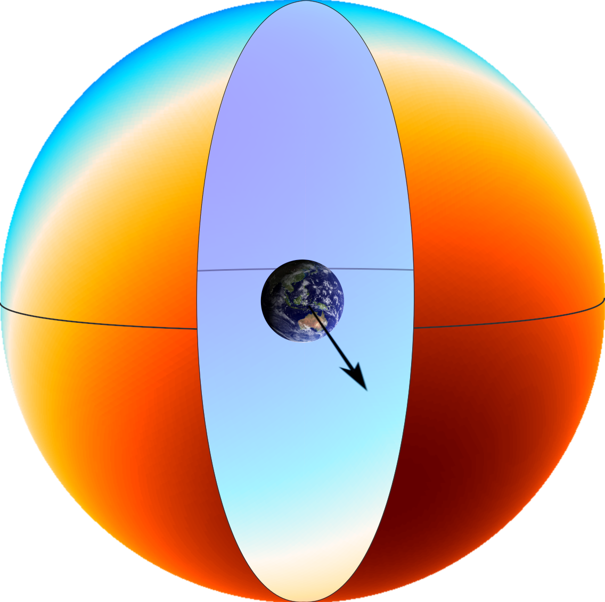
Counting Galaxies
\[ \require{color} \definecolor{secondarycolor}{RGB}{235,129,27} \newcommand{\alertmath}[1]{{\color{secondarycolor}{#1}}} N_{i} = \overline{N} (1 + \alertmath{\mathcal{D}} \cos \theta_i ) \]
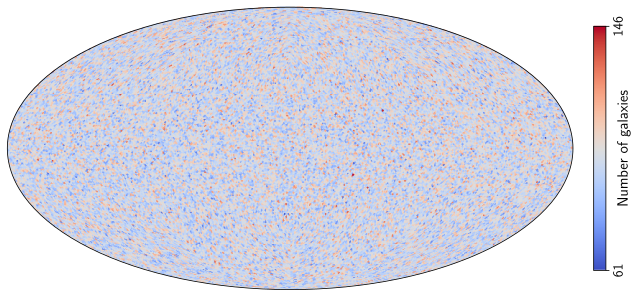
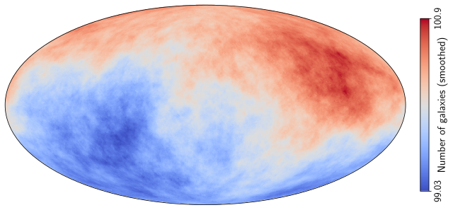
The Amplitude Excess
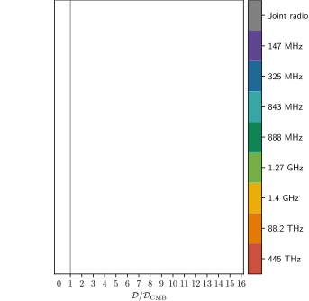
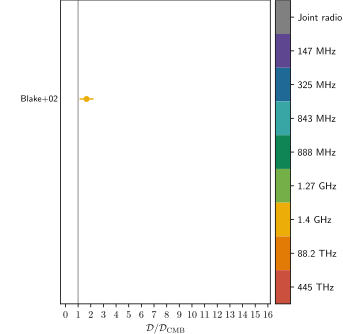
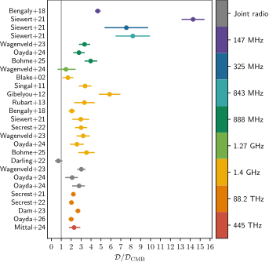
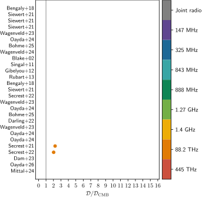
The CatWISE Sample
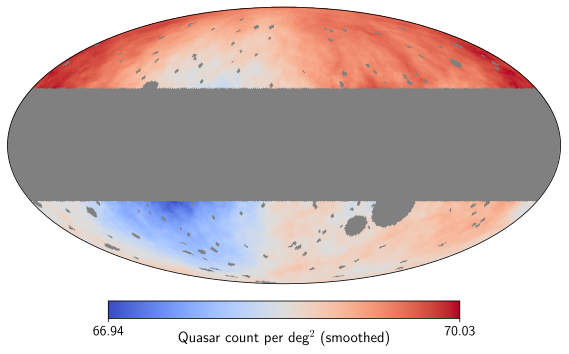
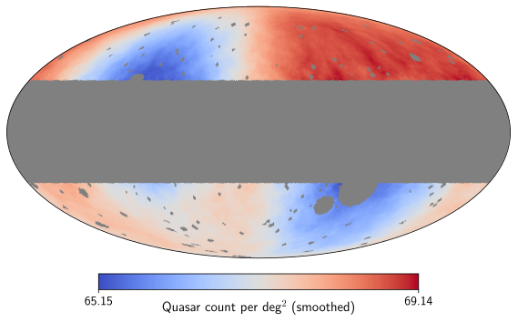
Correcting for the Bias
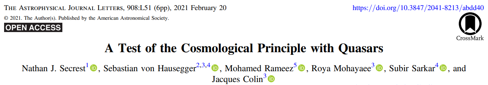
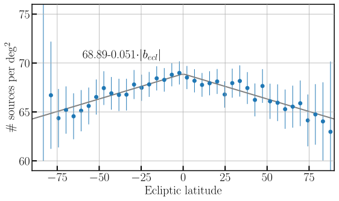
Is it good enough to make an ad hoc correction after the fact?
WISE’s Scanning Law
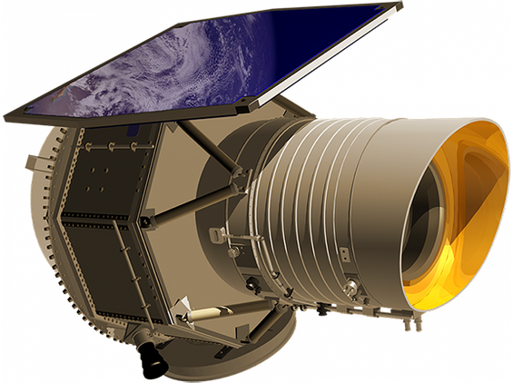
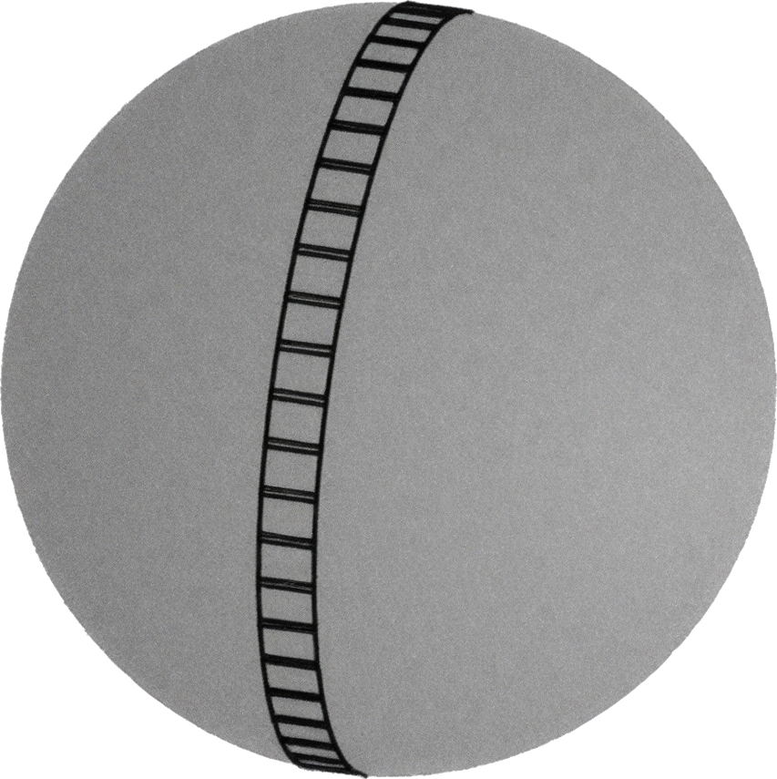
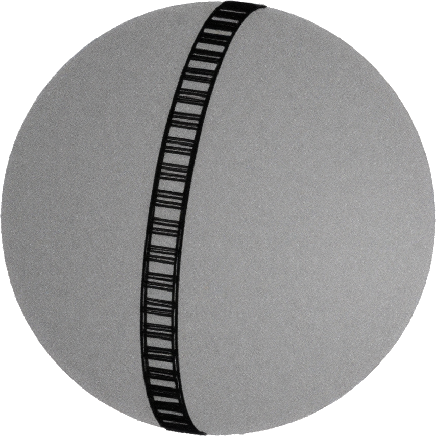
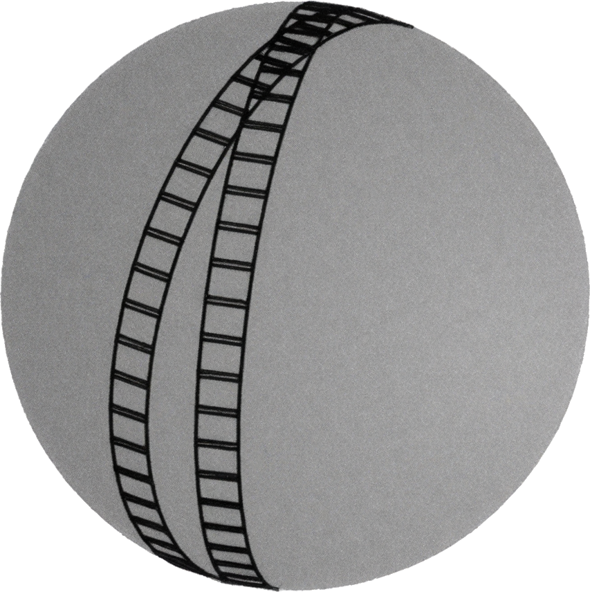
Obeys a scanning law over the survey’s lifetime
Photometric Errors
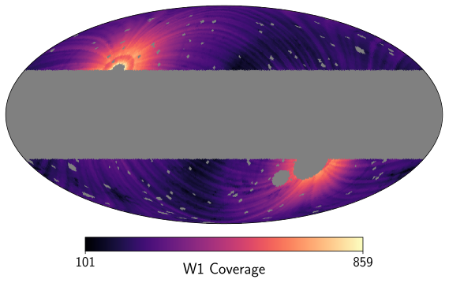
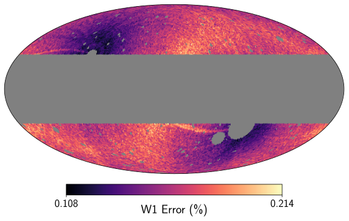
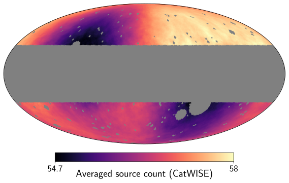
Eddington Bias
\[ \require{color} \definecolor{tomato}{RGB}{255,88,62} \definecolor{cornflowerblue}{RGB}{89,138,234} {\color{tomato}{\textsf{Sampled flux}}} = {\color{cornflowerblue}{\textsf{True flux}}} + \textsf{Noise} \]
viewof eddington_cut_index = {
const minIndex = d3.bisectLeft(eddington_bins, 1.2);
const maxIndex = d3.bisectRight(eddington_bins, 4) - 1;
const value = d3.bisectLeft(eddington_bins, 2);
const root = html`<label style="display: flex; align-items: center; gap: 0.55em;">
<span>Flux cut</span>
<input type="range" min=${minIndex} max=${maxIndex} step="1" value=${value}>
<span style="font-variant-numeric: tabular-nums; min-width: 2.8em;"></span>
</label>`;
const input = root.querySelector("input");
const output = root.querySelector("span:last-child");
root.value = input.valueAsNumber;
output.textContent = eddington_bins[root.value].toFixed(2);
input.addEventListener("input", () => {
root.value = input.valueAsNumber;
output.textContent = eddington_bins[root.value].toFixed(2);
root.dispatchEvent(new Event("input", { bubbles: true }));
});
return root;
}viewof eddington_noise = {
const root = html`<label style="display: flex; align-items: center; gap: 0.55em;">
<span>Noise</span>
<input class="eddington-noise-slider" type="range" min="0" max="1.5" step="0.025" value="0.0">
<span style="font-variant-numeric: tabular-nums; min-width: 2.8em;"></span>
</label>`;
const input = root.querySelector("input");
const output = root.querySelector("span:last-child");
root.value = input.valueAsNumber;
output.textContent = root.value.toFixed(2);
input.addEventListener("input", () => {
root.value = input.valueAsNumber;
output.textContent = root.value.toFixed(2);
root.dispatchEvent(new Event("input", { bubbles: true }));
});
return root;
}eddington_histogram = {
const xMin = 1;
const xMax = 30;
const bins = eddington_bins;
const nBins = bins.length - 1;
function histogram(values, series, color, opacity) {
const counts = Array(nBins).fill(0);
for (const value of values) {
if (value < xMin || value >= xMax) continue;
const i = Math.min(
nBins - 1,
d3.bisectRight(bins, value) - 1
);
counts[i] += 1;
}
return counts.map((count, i) => ({
x0: bins[i],
x1: bins[i + 1],
count,
series,
color,
opacity
}));
}
const fluxError =
eddington_noise === 0
? () => 0
: d3.randomNormal.source(d3.randomLcg(314))(0, eddington_noise);
const measuredSources = eddington_samples.map((d) => {
const sampledFlux = d.trueFlux + fluxError();
return {
trueFlux: d.trueFlux,
sampledFlux,
included: sampledFlux > eddington_cut
};
});
const includedSources = measuredSources.filter((d) => d.included);
const trueFlux = eddington_samples.map((d) => d.trueFlux);
const sampledFlux = includedSources.map((d) => d.sampledFlux);
return [
...histogram(trueFlux, "True distribution", "#598aea", 0.3),
...histogram(sampledFlux, "Sampled above cut", "#ff583e", 0.4)
];
}Plot.plot({
width: 720,
height: 410,
marginLeft: 72,
marginRight: 24,
marginTop: 34,
marginBottom: 58,
style: {
fontFamily: "Fira Sans, Helvetica, sans-serif",
fontSize: "15px"
},
x: {
type: "log",
domain: [1, 30],
ticks: [1, eddington_cut, 10, 20],
tickFormat: (d) =>
d === eddington_cut ? d.toFixed(2) : d3.format("~g")(d),
label: "Flux density (brightness)"
},
y: {
grid: false,
label: "Count in each flux bin"
},
marks: [
Plot.rectY(eddington_histogram, {
x1: "x0",
x2: "x1",
y1: 0,
y2: "count",
fill: "color",
fillOpacity: "opacity",
inset: 0
}),
Plot.line(eddington_histogram, {
x: "x0",
y: "count",
z: "series",
curve: "step-after",
stroke: "color",
strokeWidth: 3,
strokeOpacity: 0.95
}),
Plot.ruleX([eddington_cut], {
stroke: "#222",
strokeDasharray: "5,4",
strokeOpacity: 0.55
}),
Plot.ruleY([0], {
stroke: "#000",
strokeWidth: 2.8
}),
Plot.ruleX([1], {
stroke: "#000",
strokeWidth: 2.8
})
]
})
What if the noise varies over the sky? 🤔
This is just something we can simulate!
Simulations
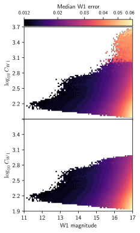
\[m'_{\nu } \to m'_{\nu} + \alertmath{\Delta m'_{\nu}} \]
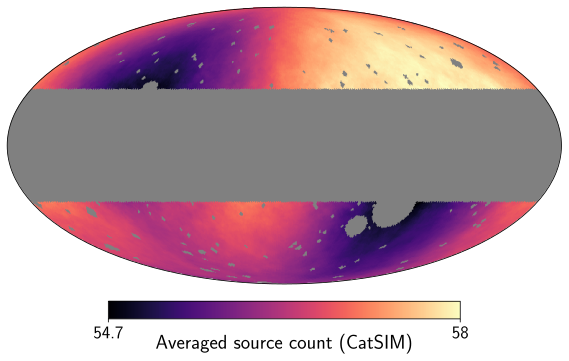
One Thing Left To Do…
\(\text{Posterior} = \dfrac{\text{Prior} \times \alertmath{\text{Likelihood}} }{\text{Evidence}}\)
- Don't know \(\alertmath{\mathcal{L}}\)? No problem!
- Take data-generating process \(f_M: \mathbf{\theta} \to \mathbf{x}\).
- Use a neural network to learn \(\alertmath{\mathcal{L}}\).
- This is SBI.
CatSIM Results
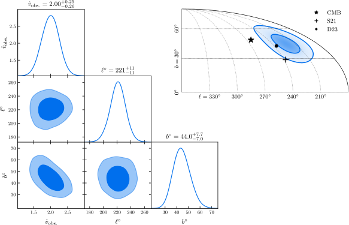
Confirms cosmic dipole tension.
Where To Next?
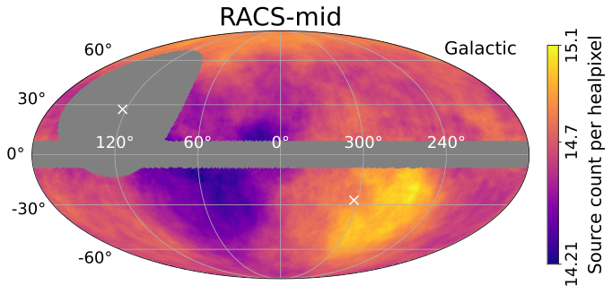
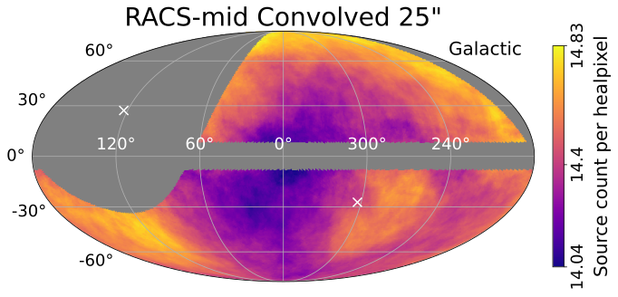
- Can we extend to other surveys?
- Let’s forward model! Account for resolution, flux calibration, etc.
- Infer cosmology and systematics together.
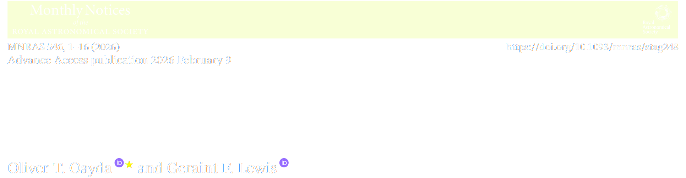
- Describe and account for ecliptic bias \(\checkmark\)
- Measure cosmic dipole \(\checkmark\)
- Leverage power of simulations and SBI \(\checkmark\)
Validation
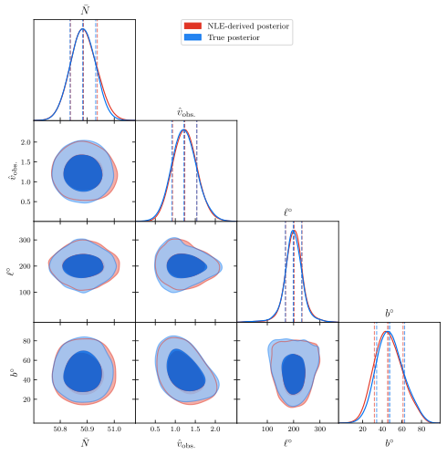
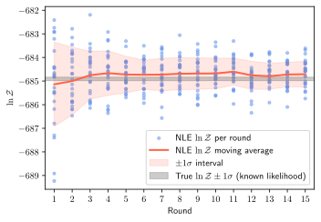